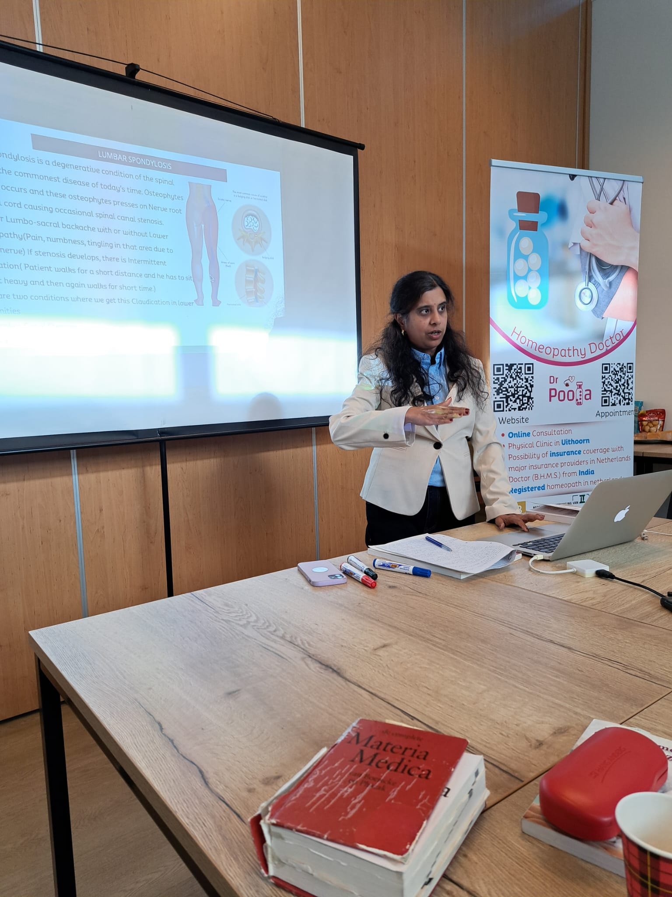

Past Training Sessions
Explore the details, photos, and materials from our past training sessions.
Biochemic Tissue Salts Training
Homeopathy and Biochemic Tissue Salts in Rheumatic Conditions
Session Details
- Date: 4th October 2025
- Venue: Bilderdijkhof 11422 DT Uithoorn
- Time: 10:00 AM to 5:00 PM
- Audience: (Aspiring) Homeopaths and Homeopathic Students
- Fees: 95 EUR per person
Session Photos

Session Videos
Video Part 1
Video Part 2
Training Materials
Vet Homeopathy Training
Vet Homeopathy and Role of Mother Tinctures in Homeopathic Practice
Session Details
- Date: 16th May 2026
- Venue: Amersfoort
- Topic: Veterinary Homeopathy and Mother Tinctures
Session Photos